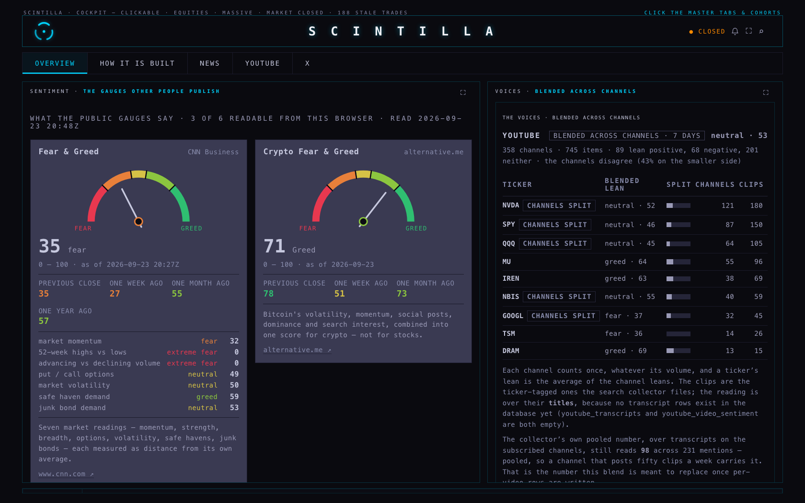
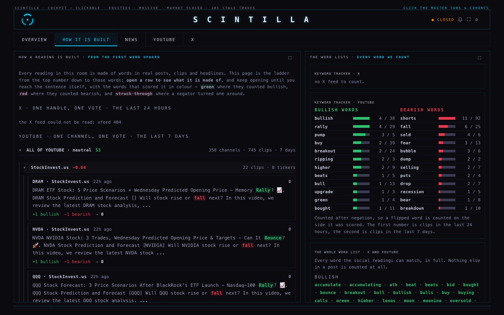
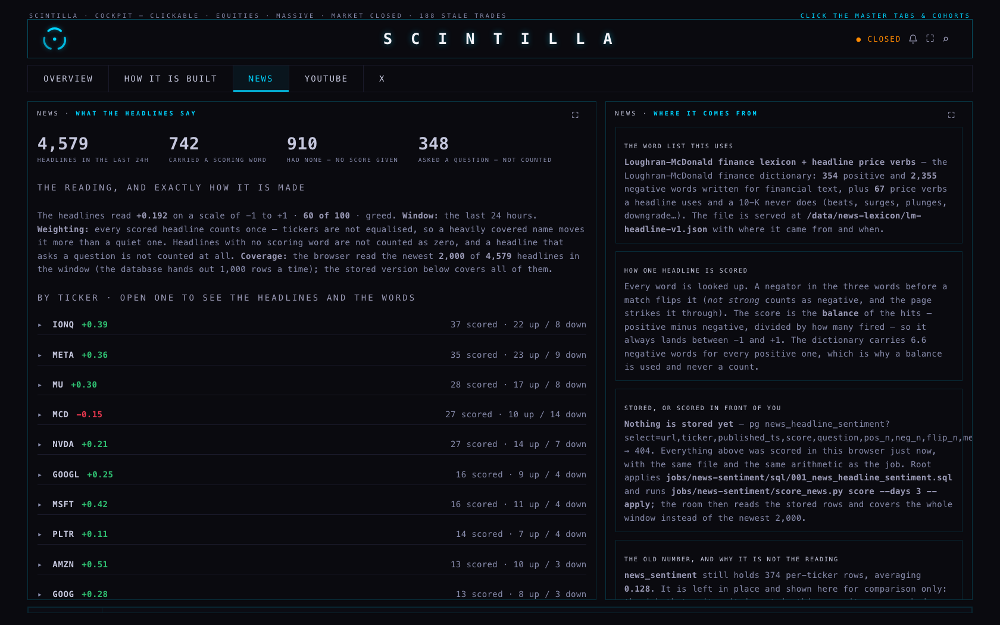
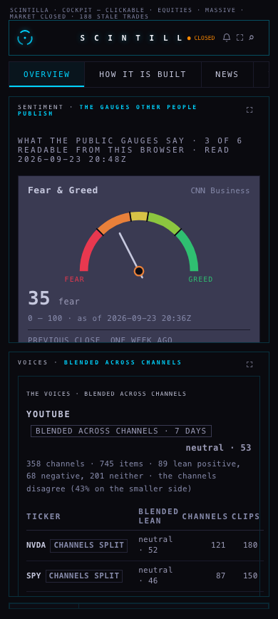
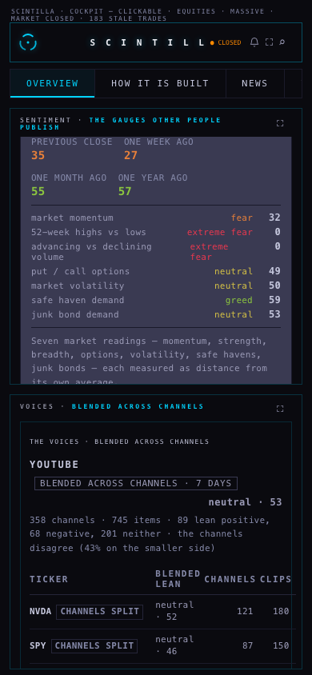
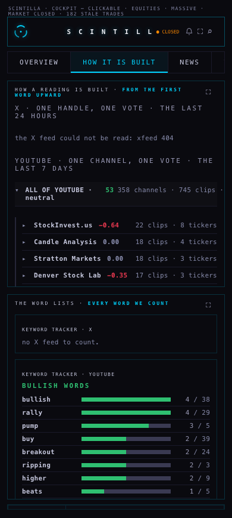

23 September 2026 · branch hub/sentiment-3-20260923 · built and checked on the MacBook · nothing deployed, nothing pushed, nothing written to the database
You said four things. "The fear and greed gauge the normal one, how it's expressed normally, is better than just putting 35." — the gauges are now drawn the way their publishers draw them, in colour, with the previous close, week and month beside them. "I need to see how the sentiment is being built from the first scintillas that are measured upwards." — there is a new page, HOW IT IS BUILT, that walks from the number down to the words in the actual post, and a keyword tracker that says which words fired today. "No individual headline carries a stored sentiment score, so how are you making a news sentiment?" — you were right, and it is fixed: every headline is now scored here, with a finance dictionary you can read, and the words that fired are kept. "You can remove StockTwits." — gone from the room and from every blend.

Nothing on these cards is ours. The number, the word beside it, the date and the three comparisons are the publisher's own, taken from the same feed their page uses. The zones are CNN's: under 25 extreme fear, 25–45 fear, 45–55 neutral, 55–75 greed, over 75 extreme greed.
VIX is now the live quote, not yesterday's close. It comes from the chart API's /macro, which carries a quote with its own observation time — at the time of writing 15.18, against a previous close of 14.21, observed 20:09Z. The card says which it is showing. The one-month against three-month shape still cannot be drawn: the chart API does not carry VIX3M and Cboe's own file refuses a browser, and the card says so rather than leaving a blank.

Every level is a row you can open, and the bottom level is the sentence itself. The leans on that page are not a second opinion: they are the same arithmetic the room's numbers are made of, so opening a row can only show you the parts of the number above it. A post is +1 for each bullish word and −1 for each bearish one; a handle or channel is the average of the signs of its items, so one prolific account cannot carry a reading; the voice is the average of the handles.
A negator flips a word, and the page shows it. "Not strong" is scored as a negative and drawn struck through, with the reason on hover. That rule is three words wide — a negator within the three words before a match — which is what the job has always done and is now visible.
You put your finger on the real problem: "The amount of headlines is not bullish or bearish until a transcript is reviewed… no individual headline carries a stored sentiment score, so how are you making a news sentiment?" The honest answer was that the room printed a number from a table called news_sentiment, written by a job that is not in this repository. Nobody could say which words, which window or which weighting produced it.
What it is now. Every headline is scored here, in front of you, against a finance-specific dictionary — the Loughran–McDonald word list, which was built for financial text rather than for film reviews: 354 positive words and 2,355 negative ones. That imbalance matters, so a headline's score is the balance of the words that fired — positive minus negative, divided by how many fired — never a raw count. The dictionary was written from 10-K filings, so it does not carry the verbs a headline actually uses: beats, surges, plunges, rally, soar, tumble, selloff, upgrade are all missing from it, which is why "NVDA beats and surges" scored neutral on the dictionary alone. 67 of those price verbs were added, and every word that fires is stored with which list it came from, so you can always see which part did the work.
| what | count | what it means |
|---|---|---|
| headlines read (last 24 hours) | 2,000 | of 4,583 stored in the window |
| carried a scoring word | 914 | these are the only ones that count |
| carried no scoring word at all | 1,086 | they get no score — not a zero. This is your point, measured: more than half of a day's headlines say nothing either way |
| asked a question | 241 | scored and shown, then left out of the total: a question is not a claim |
| flipped by a negator | 14 | "not strong", "no downgrade" |
| the reading | +0.247 | the average of the 914, each counting once |
The words that fired most: better 116, gains 81, strong 79, rally 78, breakthrough 58, surges 53, despite 45, error 41, slides 39, bullish 39. Two of those are worth your attention. "despite" is in the dictionary's positive list — that is Loughran–McDonald's own classification, and it is visibly wrong for a headline like "shares fall despite the beat". You can only see that because every word is stored. And 1,644 of the hits came from the dictionary against 555 from the added price verbs, so the finance dictionary is doing most of the work, not our additions.
Three real examples from tonight, exactly as scored:
Not honestly, not today. I looked at it properly, and here is the answer in plain words. A model that reads the whole article needs either a paid API — which you have ruled out — or a model running on this Mac. A local model (Ollama or llama.cpp with a small open model) is genuinely free and private, and would handle the language a word list cannot: irony, hedging, "beats but guides lower". But: nothing of the sort is installed on this machine; 4,583 headlines a day is roughly 4,500 model calls, which on a laptop is hours of work and a hot machine, and it competes with everything else you run; the articles themselves are not stored, only the headline and a snippet, so it would need to fetch each page first; and a model's reading cannot be taken apart the way a word list can — you would be back to a number nobody can check. My recommendation: keep the transparent word list as the stored, checkable reading, and treat a local model as a later second opinion on the few hundred headlines that matter (your own holdings), where its disagreement with the word list is itself the signal. I did not install anything and did not call any model.
The scoring you see in the room happens in your browser, live, because the table does not exist yet. The migration and the job are written and tested and are not applied — that is the coordinator's step:
jobs/news-sentiment/sql/001_news_headline_sentiment.sql — one row per headline and ticker: the score, the counts, and the words that fired.python3 jobs/news-sentiment/score_news.py score --days 3 --apply — needs a service key in the environment; it never prints it, and it writes nothing else.The old news_sentiment table is untouched. It is still shown on the NEWS page, labelled for what it is: a number whose method nobody can state.

Removed from the sentiment room, from the voices list and from every blend. Its ingester stopped writing months ago and the row was never counted, so it was one more dead thing to explain. The stored messages in social_posts are left exactly where they are — nothing was deleted from the database. The one place it still appears is the older SOCIAL room's reserved tab, which belongs to another lane and is protected by that lane's own test; removing it there is decision 1 below.
Its scheduled job is still not installed, and I installed nothing. jobs/youtube-sentiment/SCHEDULING.md is the exact thing to run, and it names a problem nobody had noticed: the plist points at lane M20's worktree, a temporary folder that is deleted when that branch is merged. Scheduled as it stands, the job would quietly fail every half hour. It must point at the deployed checkout first.
The job itself now does what lane M20 recommended: it writes one row per video and ticker into youtube_video_sentiment, so the blend can cover every ticker the channels talked about instead of the nine the pooled roll-up happens to carry. Each row keeps the bullish and bearish hit counts, the words that fired, and the ±40-word transcript window the lean came from — which is what will let the room show you the sentences a YouTube reading is made of, exactly as it now shows you the words in a post. The numbers it already produces are unchanged: the counting function was split in two so it hands back the words, and the arithmetic is the sum of those words.



Branch hub/sentiment-3-20260923. Tests: node --test tests/ — 439 tests, 2 failures, both of which already fail on production (every place this surface prints an age uses the one function and xfeed-publish). 12 new tests in tests/sentiment-anatomy.test.mjs, and the browser, the job and those tests are checked against the same fixtures so the three cannot drift apart.